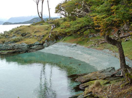
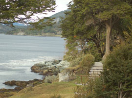

El ingreso al sendero cuenta con escaleras y pasarelas, es así que por su accesibilidad, es un área muy visitada por turistas que realizan sus excursiones tradicionales en el Parque Nacional y que transitan esta primera parte. A medida que caminamos, es posible acceder a interesantes puntos panorámicos, alternando tramos de bosques mixtos de guindo y canelo, con pequeñas playas que albergan sitios arqueológicos, que son vestigios de la presencia de los canoeros magallánicos, quienes navegaron las costas del Canal Beagle hasta principios del siglo XXI.
 